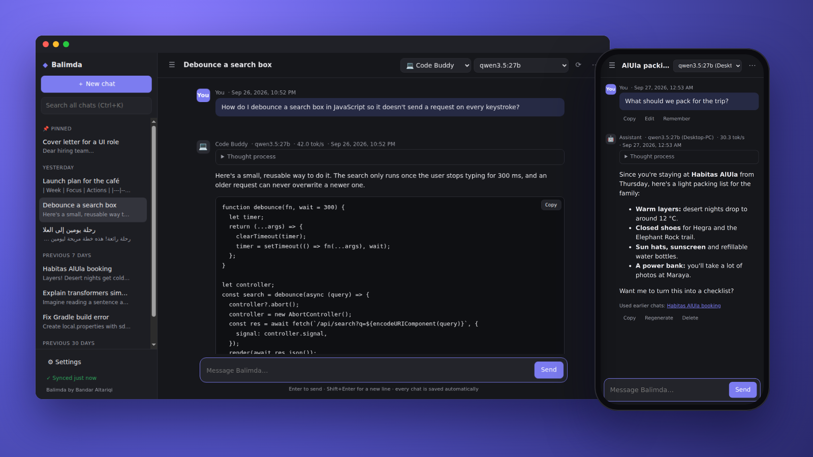
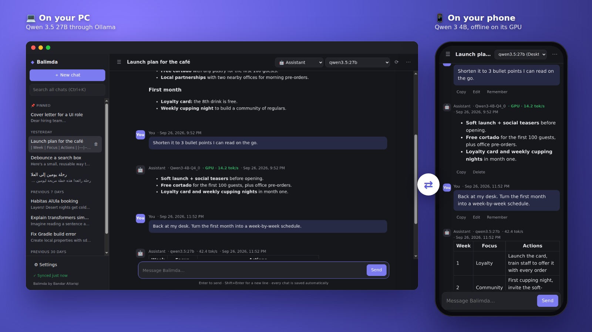

by Bandar Altariqi
A private AI chat app that keeps the same conversation on your phone and your computer, even when each one uses a different AI model.
Free for personal use · Android, Windows, macOS and Linux
Start a chat on your PC with a big model like Qwen 27B, continue the same chat on your phone with a small offline model, and finish it back at your desk. Each reply shows which model wrote it, and each device remembers its own model for every chat.
Turn on one switch and your phone can chat with every model on your computer, over your Wi-Fi or anywhere with Tailscale. Encrypted, nothing to type.
Run models directly on your phone, offline, using its graphics chip.
Balimda learns lasting facts about you, keeps them up to date, and looks back through your earlier chats, in English and Arabic.
Models on your own computer (Ollama, LM Studio), or Claude and OpenAI with your own key.
Sign in with Google to keep your chats the same on every device. They are encrypted on your device first, so only you can read them.
Close the app whenever you like and come back to the same chat, even a half-typed message.
Arabic text reads right to left, and memory and chat recall understand Arabic.
Balimda has no servers and collects nothing. Read the privacy policy.

Free for personal use. New versions install over the old one and keep your chats.
iOS is on the way. Source and all downloads are on GitHub.
Want Balimda for your team, or inside a product or service? It keeps your company's conversations on your own devices, with models on your own hardware or cloud models on your own keys. Balimda is free for personal use; use by or for a company or organisation needs a commercial license.
Balimda is made by one person, with no ads, no tracking and no subscriptions. If it's useful to you, you can support its development.